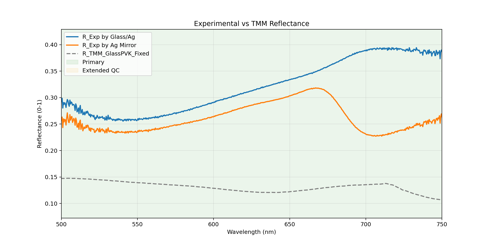
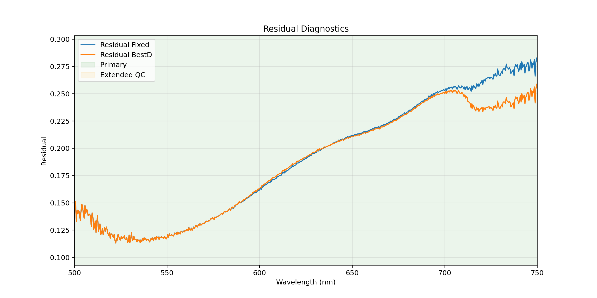
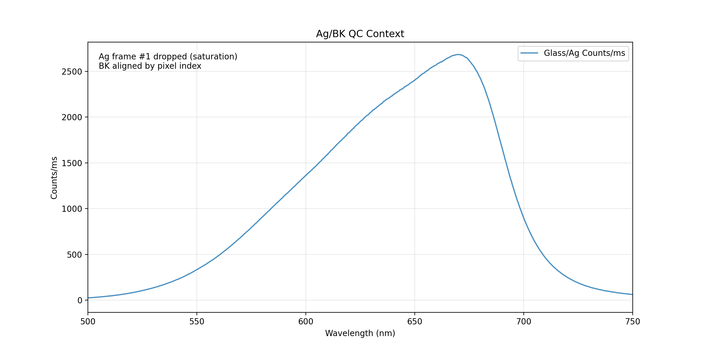

本 deck 只重构展示层，继续读取现有 pvk_x01 结果，不改主计算链。
厚玻璃前表面与后侧相干薄膜栈之间采用强度级联，而不是整体相干求和。
左右两列分别展开 glass/Ag 与 Ag mirror 参比链，强调“公式 + 数字代入 + 结果”。
把原来偏小且右侧有截断风险的图改成横向大卡片，每步都说清楚输入与物理含义。
保留四象限逻辑，但统一块尺寸、字号和二级说明，补出当前优先事项。
这两页继续复用现有 Phase 08 图，不回写主结果，只提高讲解入口质量。


